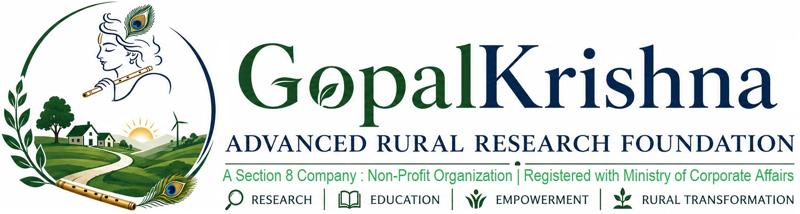

Knowledge • Innovation • Impact
Artificial Intelligence • Rural Innovation • Global Research Collaboration
The Gopalkrishna Advanced Rural Research Foundation (GARRF) is an independent non-profit research organization committed to advancing scientific research, innovation, education and sustainable rural development.
Founded with the vision of empowering future scientists, GARRF serves as a collaborative platform connecting academia, industry, government and society. Our mission is to transform advanced research into practical solutions that improve the quality of life in rural communities while nurturing innovation, entrepreneurship and scientific excellence.
Our multidisciplinary research encompasses Artificial Intelligence, Structural Health Monitoring, Digital Twins, Robotics, Smart Villages, Renewable Energy, Healthcare, Water Resources and Capacity Building through national and international collaborations.

Research Divisions
Research Domains
Countries Connected
Research Collaborations
Artificial Intelligence
Machine Learning
Digital Twins
Robotics
Structural Health Monitoring
Research Internships
Final Year Projects
Student Mentoring
Research Publications
Innovation & Hackathons
Smart Villages
Water Resources
Agriculture
Healthcare
Climate Resilience
Faculty Development
Skill Development
Professional Training
Certification Programs
STEM Education
Women Leadership
Entrepreneurship
Scientific Research
Networking
Community Empowerment
GARRF brings together internationally recognized professors, scientists, engineers, researchers, students and innovators dedicated to advancing science, technology and sustainable rural development.
Our growing network spans universities, research institutes and industries across India, Singapore, the United States, Norway and other countries, creating opportunities for interdisciplinary collaboration and global impact.